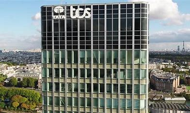

Quelle sont les fonctions de TCS ?
Ils ameliorent ou créer des logiciels pour d'autres entreprises avec des ordinateurs
donc ils apportent des services informatiques
leurs fournisseurs sont donc des fournisseurs de matériels informatiques
En france, avec un effectif de près de 1 300 employés, répartis sur 3 sites (Paris, Lille et Poitiers)

site à Paris
site à Poitiers